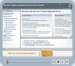
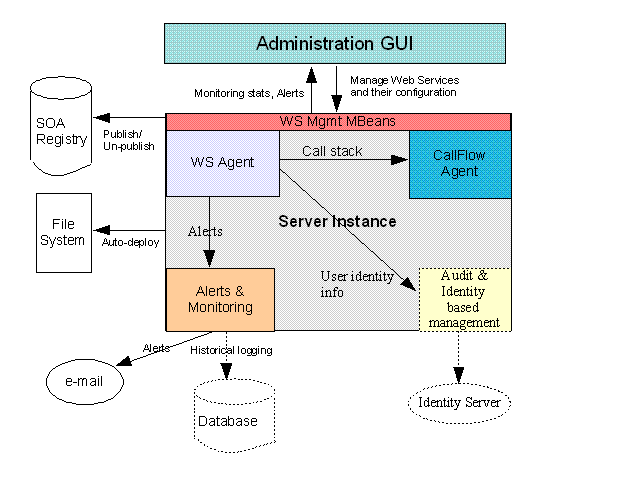
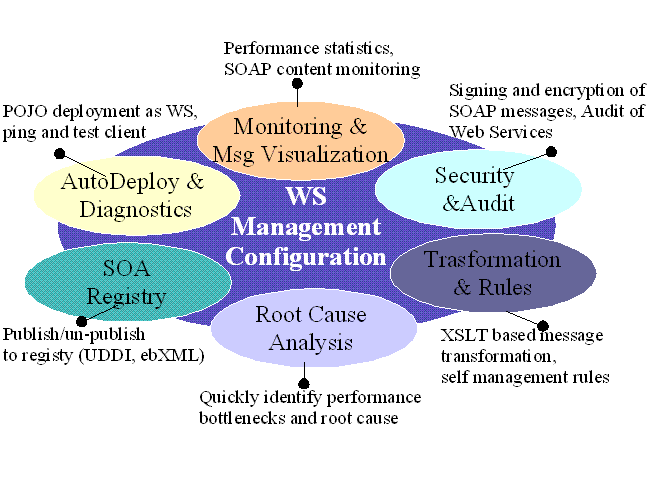
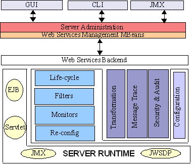

GlassFish
Project - Web Services Management home page
New
to GlassFish |
Community
Guidelines |
Downloads
|
FAQ
|
How-Tos
Welcome to the Web Services Management page. This page is dedicated
to discussing the collection new Web Services Management features in
GlassFish.
The source code for these features is part of this cvs repository.
Web Services Management News
- Satish's presentation on
on WS Management featurs to JES Arch Forum. JES Arch forum members thought these features must be provided in other web services products in the JES stack. The Role Based Administration feature was pointed out as a must to implement feature both for Web Services and other features in Application Server.
(October 17, 2006).
- A presentation and One Pager on WS Management.NEXT
featurs is online now. Features like Activity Monitoring, Service Monitoring,
Policy Monitoring and Service Testing and Validation are planned. We are
seeking feedback from the community (Aug 18, 2006).
-

|
A screencast that
shows
you how to monitor and manage web services in Admin Console is
available for watching. . It walks you through the
entire process from deploying the web service to configurating
it for monitoring, to interpreting the statistics, to testing and
finally applying the transformation rule. (May 14, 2006) |
- New article Managing
and Monitoring Web Services in Project GlassFish is available.
This comprehensive, three-part article shows you how to monitor and
manage Web services with Project GlassFish. (March 01, 2006)
- WS Management Registry page has come online with steps required to
work with JWSDP 1.6 EBXML Service Registry (Feb 14, 2006).
- In GlassFish Web Services are first class manageable objects,
combined with detailed Monitoring and Diagnostics. See below for
more information on the design and implementation of these features.
Page Contents
Overview
In Glassfish, all web service endpoints are discovered and shown
distinctly,
so they can be managed. Response times and invocation counts are
tracked and this performance information can be graphed in real time.
Alerts
can be generated on various boundary conditions including resposetime
time
and through put failures. Web Service invocation content can be viewed
in XML. Runtime message transformation can be achieved using
XSLT.
Here is an overview of the Architecture of the Web Services Management
in GlassFish.

Figure 1: Web Services Management Architecture
Our approach does not require developers to change the Web service
implementation
or their clients - no retrofitting the code with proprietary controls,
inserting proprietary headers or using proprietary APIs. This
non-invasive
approach guarantees that user can add management (even after
development)
without disrupting the client side or the server side. The following
sections
describe each feature in detail.

Figure 2: Web Services Management Features
Web Services As First Class
Objects
Currently, it is very hard to find all the deployed web services in a
domain.
Similar to EJBs and Servlets, all Web Services will listed in the
management
console. User will be able to select a web service and be able to
manage
it. Users will be able to look at the deployment artifacts of the web
service
(webservices.xml, WSDL, etc.) and perform other management tasks
described
in this specification. Please refer to [13] for the UI layout details.
The backend will consist of a crawler that will discover all the web
services
in Central Repository. Web Services Management AMX Mbeans provide the
necessary
support for GUI and CLI.
Monitoring
We will have capabilities to track and graphically show operational
statistics,
such as the number of requests per second, average response time and
throughput.
Monitoring configuration model will be enhanced to support monitoring
per
web service or per application. Each web service can be configured for
monitoring. Supported monitored Levels are OFF, LOW and HIGH. If
monitoring
is turned ON for a web service, it is enabled for all operations in
that
web service.
Message Visualization
When enabled, it will be possible to see last N (default is 25)
messages
for a Web Service end point. These messages will be kept in memory of
the
remote server instances. Details of SOAP request, response and HTTP
header
information will be available.
Transformation
User will be able to apply XSLT transformation rules per web service
end
point. This enables fine grained control of Web Services request and
response.
Multiple XSLT rules can be applied to a web service end point method.
The
order in which the transformations are applied is deterministic and can
be configured. All the XSLT files will be stored in the
"generated/xml/<appOrModule>"
directory of Central Repository. These transformation rules will be
synchronized
to the remote server instances.
Registry
A web service can be Published(Advertised)/Unpublished(unadvertised) to
the JES registry and can be discovered from the JES Registry.
Publish/Unpublish
WS to external registries and Discover them from external registries.
The Configuration Model
New element called web-service-endpoint is added
as child element to j2ee-application, ejb-module and web-module
elements.
Other 2 new config elements are transformation-rule and
registry-location.
These relevant config elements are listed in ws-mgmt-config.dtd.
For the complete server configuration model, please
refer to sun-domain_1_2.dtd
CLI Commands
Please refer to CLI command reference page for the list of commands
available
for Web Services Management. The common CLI command usage is
illustrated
here.
Code-Walkthrough
The GlassFish Web Services management code is located in
ws-mgmt
sub module in the repository. The following describes all the sub
packages
in this module.
The Agent
sub-package, which registers call back/listeners with JSR
109 Implementation. These callback provides the information
required
for web services management.
Filter
sub-package contains the code that executes a management function on
these
callback. Examples of a Filter is a Monitoring Filter, Transformation
Filter
or Message Filter.
Lifecycle
manages enabling and disabling of the filters. This lifecycle code
kicks
in both on server initialization and dynamic reconfiguration after
startup.
Transformation implementation is in Transform
directory. Message Transformation Filters and data collection logic is
in Msg
and the underlying Pool implementation is Pool
.
The following diagram shows the sub packages in Web Services
Management
backend.

Figure 3: Web Services Management Backend Internals
Unit/Acceptance Tests
Running
the Quicklook tests is required in this section. In addition to the
Quicklook tests the Web Services Management module has unit tests
developed
which need to pass prior to checking in any code. The setup for running
unit tests is the same as the Quicklook tests. To run just the web
services
management unit tests do the following:
Go to glassfish/admin/mbeanapi-impl/tests
You will need to change host/port/user/password properties in
amxtest.properties
maven runtest
Please follow the instructions in the file amx-unit-tests.html
This will build and run all the all the AMX unit tests including the
tests
in
tests/com/sun/enterprise/management/ext/wsmgmt.
See the amx-unit-tests.html for more details.
Supporting Documentation
This section will be updated with useful documents and information
about the Web Services Management - Tutorials, Blogs and other useful
links.
- Building
JAX-WS 2.0 Services with NetBeans 5.0
This article explains how you can use the built-in features of NetBeans
5.0 to create JAX-WS 2.0 services quickly. The steps to create a web
service with JAX-WS 2.0 have been simplified, and you can turn a web
application project in NetBeans into a web service with very few steps.
(December 2005)
- Java
EE 5 "Hello World" application in NetBeans
This tutorial shows how to use NetBeans and the GlassFish application
server to create and test a simple "Hello World" Java Enterprise
Edition 5 application with Enterprise JavaBeans 3.0 and dependency
injection in JavaServer Faces. (November 2005)
- Fast
Infoset and the Pragmatic SOA Approach
Fast Infoset complements the best practices of SOA -- specifically,
loosely-coupled, document-based messaging. Read why Fast Infoset is a
viable alternative to XML when message size and parsing performance are
issues. (October 2005)
- What's
New in SOA and Web Services?
This article introduces the enhanced capabilities and emerging
technologies, tools, and infrastructure software to simplify creating,
using, and managing services in an SOA. (October 2005)
- Mutual
Authentication for Web Services: A Live Example
How do you set up secure communications among Web services for
supply-chain applications? This article answers that question with a
description of the implementation procedure for mutual authentication,
citing the java.net project Adventure Builder as an example. (October
2005)
ToDo List
The following is non-comprehensive list of developer friendly web
services management ToDo features. Please email
us
if you have questions about current implementation or would like to
contribute towards future ToDo list.
- Analyze WSDL for potential problems and compliance to standards
- Compare WSDL (diffing) Includes all documents referenced by the
WSDL
- Analyze SOAP messages for potential problems and compliance to
standards
( BP 1.1 and WS-I Attachments Profile analysis
- Compare SOAP messages
- Compare HTTP headers
- Message visualization:
- Pseudocode View
- Tree View (outline view of XML)
- Raw View (XML as it appears on the wire)
- Hex View
- WSDL visualization:
- Pseudocode View
- Tree View (outline view of XML)
- XML View (with syntax coloring)
- Raw View (XML as it appears on the wire)
- Graph View (document structure)
- Alerts based on aggregated data. (Date/Time)
- Five minute or one hour summaries
- Auto generate test messages
- Easy Configuration of authentication, integrity with digital
signatures
and confidentiality with digital encryption including WS-Security
- Historical logging
- Identity based management